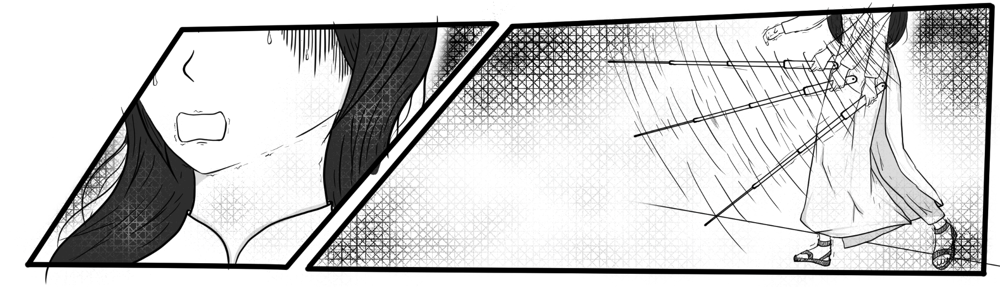
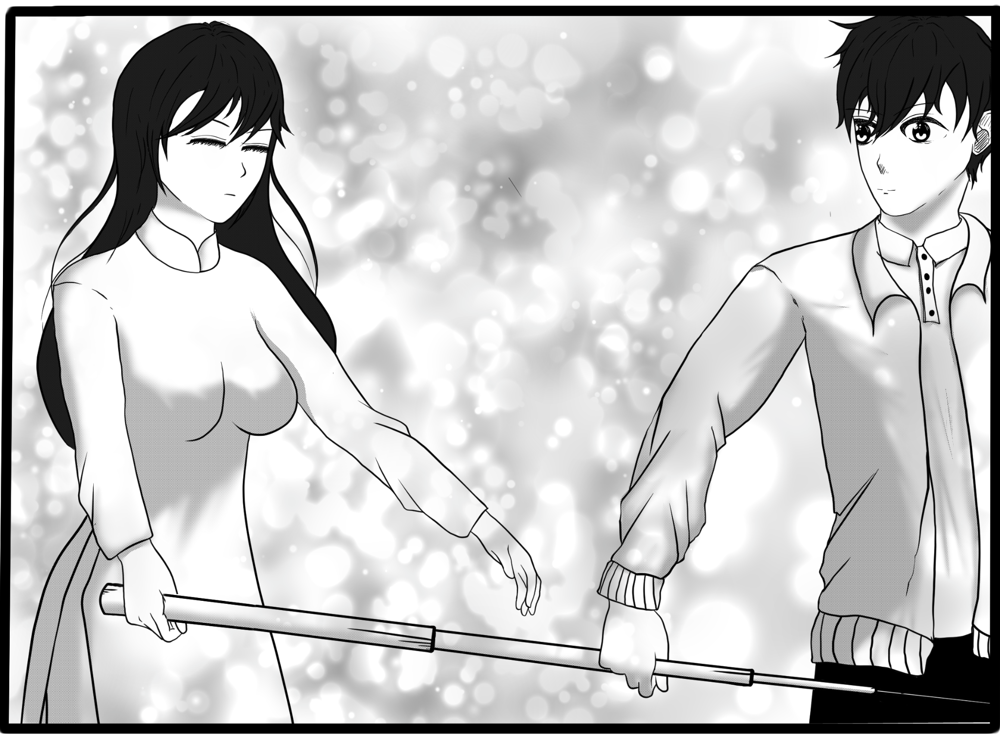
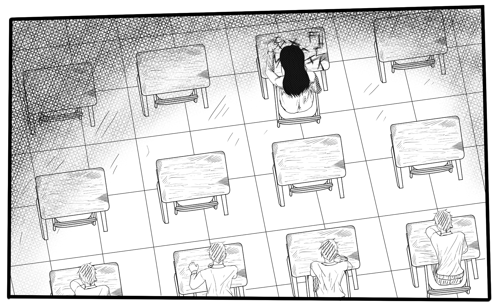
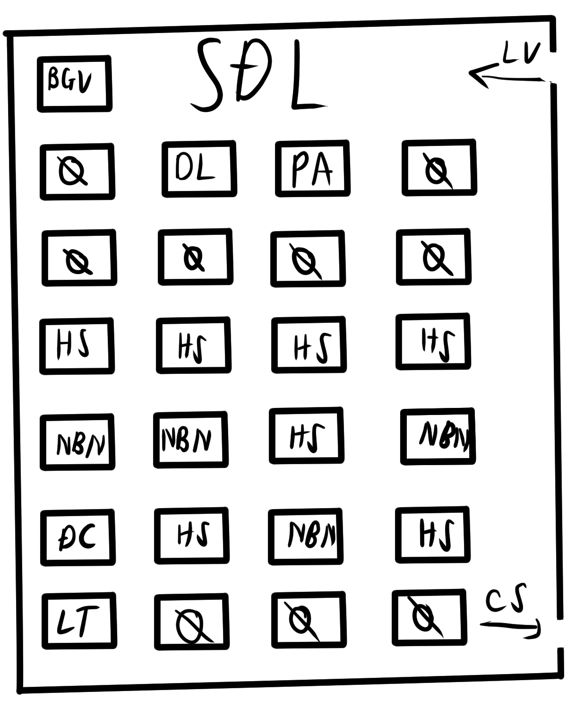

Chương 2 — Người con gái trong bóng tối
NGƯỜI CON GÁI TRONG BÓNG TỐI
CHƯƠNG 2
Cô ấy lúc này trông vô cùng hoảng loạn, chỉ biết vung cây gậy loạn xạ xung quanh.
Dễ dàng nhận ra... cô là người khiếm thị.
Mọi thứ từ chiếc gậy trắng trong tay đến vẻ lạc lõng của cô đều chứng minh điều đó.
Và rồi, tôi chợt hiểu ra... có lẽ đây chính là cái mà người ta gọi là “bạo lực học đường”.
Tôi đứng lặng, trong lòng dấy lên sự lưỡng lự.
Nếu tôi bước tới, liệu có giúp được cô ấy...hay chỉ khiến bản thân bị vạ lây?
Trong lúc tôi còn đang do dự, cô gái ấy càng trở nên hoảng sợ hơn. Cô vừa run rẩy lùi lại, vừa nói:
“Các người... đừng... đừng lại gần! Không thì tôi... tôi sẽ hét lên đấy!”
Nhìn thấy cô như thế, trong lòng tôi cho chút nhói khi lại có suy nghĩ rằng sẽ làm ngơ và bỏ cô ấy ở lại đây.
“Bình tĩnh nào... bình tĩnh. Tôi không phải đám người đã đưa cậu vào đây...”
“...”
Giọng tôi vang lên khẽ khàng. Ngay khi nghe thấy, cô ấy thoáng khựng lại...dường như vừa nhận ra điều gì đó. Sự cảnh giác của cô ấy vẫn không hề lay chuyển.
Sự hoảng loạn trong cô dần dịu xuống, nhưng cây gậy trên tay vẫn chĩa thẳng về phía tôi, nơi âm thanh vừa phát ra.
“Vậy... vậy cậu là ai? Đây là đâu?”
Giọng cô ấy vẫn run run, thoang thoảng sự sợ hãi.
“Tôi chỉ đang đi tham quan trường thôi. Vô tình thấy cậu ở đây... À, mà... đây là vệ sinh nam.”
“!!? ... vệ sinh... nam?”
Ngay khi nghe thấy hai chữ đó, cô ấy lập tức cứng người. Sắc mặt dần tái đi, rồi cơ thể bắt đầu run rẩy.
“Sao... sao bọn chúng... lại...”
Giọng cô nghẹn lại giữa chừng. Những giọt nước mắt khẽ rơi từ đôi mắt mờ đục ấy, khiến tôi chỉ biết đứng im.
[Sao hôm nay tôi lại phải thấy nhiều người phụ nữ rơi nước mắt thế này chứ...]
“HAIZ!....”
“Cậu có cần tôi... đưa ra khỏi đây không?”
Tôi hỏi bằng giọng thật nhẹ, sợ rằng chỉ một âm cao thôi cũng khiến cô hoảng sợ thêm.
Cô vẫn im lặng, đôi tay nắm chặt lấy cây gậy. Cảnh giác nhưng cũng lộ rõ sự mệt mỏi.
Sau một hồi lưỡng lự, cô khẽ gật đầu.
“...”
“Cậu... không lừa tôi tiếp chứ?”
Giọng cô ấy vẫn còn thoang thoảng sự cảnh giác, dù đã bớt run rẩy hơn trước.
“Tôi không giống bọn chúng đâu.” – tôi nói một cách dứt khoát.
Sau khi nghe tôi nói, cô khẽ do dự một lúc, rồi chậm rãi tiến lại gần, nhưng vẫn giữ một khoảng cách an toàn.
Cô đưa một đầu của cây gậy chỉ đường về phía tôi.
“Vậy... phiền cậu đưa tôi đến tòa H nhé.”
Tôi gật đầu, nhẹ nhàng đón lấy đầu gậy.
Cứ thế, hai chúng tôi cùng bước đi.
Trên đường, chẳng ai nói gì cả.
Tiếng gió sớm len qua những tán cây, và tiếng bước chân xen kẽ vang lên trong khoảng sân vắng.
Nhờ có bản đồ, nên chẳng bao lâu sau, chúng tôi đã đến sảnh của tòa H.
“Đến đây là được rồi...”
Giọng cô ấy vang lên, nhẹ nhàng và bình tĩnh hơn hẳn.
Sự hoảng loạn khi nãy dường như đã biến mất, chỉ còn lại một nét mệt mỏi dịu dàng trong từng lời nói.
Cô ấy buông nhẹ cây gậy khỏi tay tôi, khẽ cúi đầu.
“Cảm ơn cậu... và... xin lỗi vì đã nghi ngờ.”
Giọng cô trầm, nhỏ nhưng lại mang theo sự chân thành khiến tôi hơi bối rối. Tôi gãi đầu, cười ngượng.
“Không sao đâu. Cũng phải thôi, trong hoàn cảnh đó...ai mà chẳng đề phòng.”
Một thoáng im lặng trôi qua. Cô ấy khẽ ngẩng mặt lên, đôi mắt mờ đục hướng về phía tôi dù không thể nhìn thấy, nhưng tôi có cảm giác... như thể cô ấy đang “nhìn” thẳng vào tôi vậy.
Rồi... cô mỉm cười. Một nụ cười dịu đến mức khiến tim tôi khẽ chùng lại.
“Cảm ơn cậu, thật đấy.”
Trong khoảnh khắc ấy, ánh nắng đầu ngày len qua khung cửa sảnh, phản chiếu lên tà áo dài trắng của cô. Mọi thứ trở nên yên bình đến lạ.
Tôi không biết phải nói gì, chỉ đứng đó, nhìn theo khi cô khẽ xoay người rời đi, chiếc gậy chạm nhè nhẹ xuống nền gạch – cộp... cộp...
Cứ thế, âm thanh ấy dần xa... để lại trong lòng tôi một cảm giác rất khó tả.
Không biết từ khi nào, tôi lại khẽ mỉm cười.
Ngôi trường này khá rộng, nhưng điều khiến tôi ấn tượng là sự linh hoạt trong thiết kế. Dường như họ đã thật sự nghĩ cho tất cả mọi người, kể cả những người khiếm thị như cô ấy. Khắp các lối đi đều có những đường gờ định hướng, giúp họ dễ dàng di chuyển hơn.
Tôi thầm gật gù, đánh giá ngôi trường này khá tốt, dù vẫn còn vài điểm tôi chưa dám chắc.
“Chết... đến giờ rồi!”
Tôi bật dậy và cắm đầu chạy về phía phòng giáo viên. Trong hành lang, tiếng bước chân và tiếng trò chuyện của học sinh vang lên nhiều dần.
“Ha... hộc... hộc... em xin lỗi, em đến trễ ạ.”
Tôi vừa nói vừa cố thở đều, mồ hôi rịn ra nơi trán.
“Không sao đâu, cô cũng vừa làm xong việc thôi.”
Cô chủ nhiệm mỉm cười, đưa cho tôi một cốc nước lạnh. Tôi nhận lấy, gật đầu cảm ơn.
Trên đường đi đến lớp, chúng tôi vừa đi vừa trò chuyện.
“Lớp của em ở tòa H, tầng 6 nhé. Ban đầu có thể hơi khó hòa nhập một chút vì em vào giữa năm, nhưng rồi sẽ quen thôi.”
“Vâng ạ.”
Tôi đáp khẽ, nhưng trong đầu lại chợt lóe lên một suy nghĩ.
[Tòa H...].
“Em đứng ngoài đây đợi cô một tý, khi nào cô gọi vào thì hãng vào được không?”
“ Dạ vâng.”
Cánh cửa lớp đóng lại, tôi đứng ngoài hành lang nghe tiếng ồn ào của một lớp học đã ổn định từ lâu. Tiếng nói cười, tiếng ghế kéo, tiếng bàn tán... tất cả hòa thành một thứ âm thanh vừa xa lạ vừa thân quen.
Bên trong, giọng cô vang lên:
“Tất cả về chỗ đi nào, cô có một thông báo cho lớp mình.”
Tiếng xì xào lập tức nhỏ dần.
“Hôm nay sẽ có một bạn học sinh mới chuyển vào lớp ta. Vì là bạn mới nên mong mọi người giúp đỡ hay giúp đỡ bạn ấy nhé!”
Ngay sau đó, những tiếng rì rầm lại nổi lên, ai đó đoán tôi là người như thế nào, có người cười khúc khích, có người lười biếng ậm ừ.
“Được rồi, Phát Anh, em vào đi.”
Tôi hít một hơi thật sâu, rồi đẩy cửa bước vào.
Ngay khoảnh khắc bước vào tôi bất giác khựng lại một nhịp.
Bàn ghế ở hàng đầu vẫn nguyên vẹn chẳng thiếu cái nào. Vậy mà chỉ có một người duy nhất ngồi ở đó.
Không ai khác, chính là cô gái khiếm thị mà tôi đã gặp sáng nay.
Chỉ một ánh nhìn thoáng qua cũng có thể hiểu được. Cô ấy hoàn toàn bị cô lập. Không bạn bè, không ai trò chuyện, chẳng ai quan tâm.
Cô ấy ngồi đó như thể bị tách khỏi phần còn lại của thế giới, và điều khiển tôi thấy nhói lòng hơn cả...Là tất cả mọi người dường như đã quen với điều đó.
Cái ý nghĩ “Đây là một ngôi trường tốt” trong tôi tan vỡ ngay khoảng khắc ấy. Mọi kỳ vọng, mọi hy vọng về một môi trường học đường ấm áp đều sụp đổ.
Tôi nhìn sang cô giáo chủ nhiệm, người mà lúc đầu tôi từng nghĩ là hiền hậu, tử tế. Nhưng thật cay đắng...có vẻ chính cô ấy lại để chính chuyện này xảy ra, mặc dù giờ đã là giữa năm học....
Khi đang mải mê trong những suy nghĩ hỗn loạn, giọng cô giáo vang lên:
“Em giới thiệu một chút về bản thân đi, Phát Anh.”
Tôi khẽ giật mình, nhưng nhanh chóng lấy lại bình tĩnh.
“Chào mọi người, tôi là Phát Anh, học sinh mới chuyển đến lớp 10B6. Từ hôm nay, mong mọi người giúp đỡ.”
Giọng tôi vang lên giữa không gian im ắng, chỉ có vài tiếng xì xào khẽ truyền lại.
“Em có thể chọn một trong những chỗ trống để ngồi nhé.”
Tôi đảo mắt quanh lớp.
Đúng như cô nói, vẫn còn khá nhiều chỗ trống, kể cả là ở phía sau. Nhưng ngay từ giây phút bước vào, tôi đã biết rõ mình muốn ngồi ở đâu.
Tôi bước thẳng đến hàng đầu, nơi chỉ có duy nhất một người ngồi – Cô gái khiếm thị với mái tóc dài và dáng ngồi lặng lẽ.
“Vậy... em có thể ngồi ở chỗ này được chứ?”
Tôi cố tình nói to hơn một chút, để chắc rằng cô ấy có thể nghe thấy.
Khoảnh khắc ấy, đôi vai cô khẽ run lên. Dù vẫn cúi mặt, tôi có thể nhận ra một thoáng ngạc nhiên hiện rõ qua cách cô siết nhẹ lấy cây gậy.
Tôi quay sang nhìn cô giáo và cả lớp và đúng như dự đoán, mọi ánh mắt đều hướng về phía tôi, ngỡ ngàng.
Không khí trong lớp chùng xuống một nhịp.
Tôi thật sự không nghĩ chỉ một hành động nhỏ như thế... lại khiến mọi người bất ngờ đến vậy.
“Nhưng chỗ này... có chút...”
Giọng cô giáo khựng lại giữa chừng, đôi mắt hơi dao động như muốn nói gì đó nhưng lại thôi.
“Có vấn đề gì không ạ?”
Tôi hỏi dứt khoát, giọng bình tĩnh nhưng trong lòng cũng thấp thoáng cảm giác khó tả.
“...”
Khoảng lặng ngắn ngủi ấy khiến cả lớp càng chú ý hơn. Tôi nghe loáng thoáng vài tiếng xì xào phía sau những câu thì thầm nhỏ nhưng đủ để cảm thấy ánh mắt mọi người đang đổ dồn về mình.
Không khí trong lớp trở nên im ắng lạ thường, chỉ còn tiếng ghế dịch nhẹ khi tôi kéo ra và ngồi xuống.
  
Bình luận
Cảm ơn mọi người đã đọc! Hẹn gặp ở chương 3 ❤️
Bình luận lưu trên thiết bị (local). Nếu muốn bình luận chung cho mọi người, có thể tích hợp Disqus.